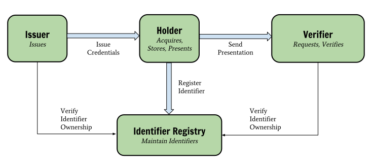
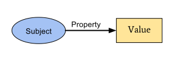
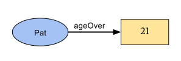
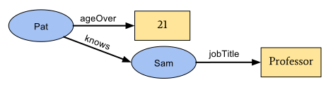
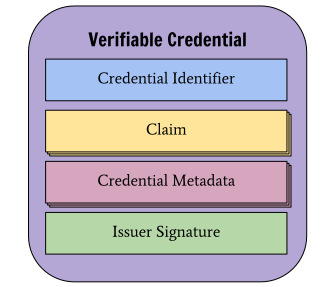
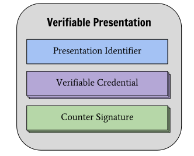
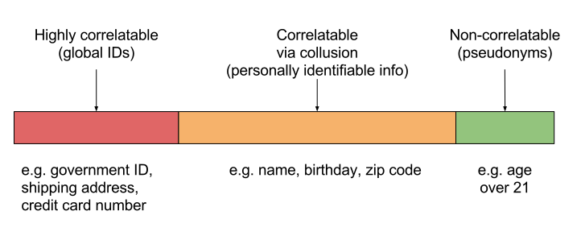

Credentials are a part of our daily lives;
driver's licenses are used to assert that we are capable of operating a motor
vehicle, university degrees can be used to assert our level of education, and
government-issued passports enable holders to travel between countries.
This specification provides a mechanism to express these sorts of
credentials on the Web in a way that is cryptographically secure,
privacy respecting, and machine-verifiable.
Status of This Document
This section describes the status of this document at the time of its publication. Other documents may supersede this document. A list of current W3C publications and the latest revision of this technical report can be found in the W3C technical reports index at https://www.w3.org/TR/.
Publication as an Editor's Draft does not imply endorsement by the W3C
Membership. This is a draft document and may be updated, replaced or obsoleted by other
documents at any time. It is inappropriate to cite this document as other than work in
progress.
This document was produced by
a group
operating under the
W3C Patent Policy.
W3C maintains a public list of any patent
disclosures
made in connection with the deliverables of
the group; that page also includes
instructions for disclosing a patent. An individual who has actual knowledge of a patent
which the individual believes contains
Essential
Claim(s) must disclose the information in accordance with
section
6 of the W3C Patent Policy.
Credentials are a part of our daily lives; driver's licenses are used to
assert that we are capable of operating a motor vehicle, university degrees
can be used to assert our level of education, and government-issued passports
enable us to travel between countries. These credentials provide benefits
to us when used in the physical world, but their use on the Web continues to
be elusive.
It is currently difficult to express banking account information,
education qualifications, healthcare data, and other sorts of machine-readable
personal information that has been verified by a 3rd party on the Web and this
makes it difficult to receive the same benefits from the Web that physical
credentials provide us in the physical world.
This specification provides a
standard way to express credentials on the Web in a way that is
cryptographically secure, privacy respecting, and machine-verifiable.
For those that are unfamiliar with the concepts related to verifiable credentials,
the following sections provide an overview of:
what a verifiable credential contains,
an ecosystem where verifiable credentials are expected to be useful, and
the use cases and requirements that informed this specification
1.1 What is a Verifiable Credential?
In the physical world, a credential may consist of:
information related to the subject of the credential (e.g. photo, name, and
identification number),
information related to the issuing authority (e.g. city government,
national agency, or certification body),
evidence related to how the credential was derived, and
information related to expiration dates.
A verifiable credential is capable of representing all of the same information
that a physical credential is intended to represent. The addition of
digital technologies, such as digital signatures, also make verifiable
credentials more tamperproof and therefore more trustworthy
than their physical counterparts. Verifiable credentials can also be
rapidly exchanged through the Internet, making them more convenient than
their physical counterparts when needing to establish trust at a distance.
1.2 Ecosystem Overview
This section is non-normative.
This section outlines a basic set of roles and an ecosystem where verifiable
credentials are expected to be useful. In this section, we distinguish the essential
roles of core actors and the relationships between them; how do they interact?
A role is an abstraction that might be implemented in many different ways. The
separation of roles suggests likely interfaces and/or protocols for
standardization. The following roles are introduced in this specification:
A role an entity may perform by creating a verifiable credential,
associating it with a particular subject, and transmitting it to
a holder. Examples of issuers include corporations, non-profits,
trade associations, governments, and individuals.
A role an entity may perform by receiving one or more
verifiable credentials for processing.
Examples of verifiers include employers, security personnel, and websites.
A role a system may perform by mediating the creation and verification of
subject identifiers. Examples of identifier registries include
corporate employee databases, government ID databases, and distributed ledgers.

Figure 1
The roles and information flows that form the basis for this specification.
Note
The ecosystem above is provided as an example to the reader in order to ground
the rest of the concepts in this specification. Other ecosystems exist, such as
protected environments or proprietary systems, where verifiable credentials also
provide benefit.
Issue 57: Ideas for roles to add to the data model for next draftIcebox
The VCWG is actively discussing the number of roles and terminology used
in this specification.
The group expects terminology and role identification to be an ongoing
discussion and will be influenced by
public feedback on the specification. At present, the following incomplete
list of roles and terminology have been considered: Subject, Issuer, Authority,
Author, Signatory, Holder, Presenter, Asserter, Claimant, Sharer,
Subject's Agent, Prover, Mediator, Inspector, Evaluator, Verifier, Consumer, and
Relying Party. Some of these are aliases for the same concept, others are
possibly new roles in the ecosystem. Reviewers should be aware that the
terminology used in this document is not necessarily final and the group is
actively soliciting feedback on the roles and terminology used in this
specification.
The group is currently discussing how the ecosystem overview could be improved
with the intent to defer future improvements as the current section seems to
be working well so far.
As a result of documenting and analyzing the use cases document, a number of
desirable ecosystem characteristics have been identified for this
specification, namely:
There are
other requirements
listed in the Verifiable Credentials Use Cases
document that may or may not be aligned with the requirements listed above.
The VCWG will be ensuring alignment of the list of requirements from both
documents over time and will most likely move the list of requirements to a
single document.
2. Terminology
This section is non-normative.
This document attempts to communicate the concepts outlined in the
Verifiable Credentials space by using specific terms to discuss particular
concepts. This terminology is included below and linked to throughout the
document to aid the reader:
A set of one or more claims made by the issuer.
A verifiable credential
is a credential that is tamper-resistant and whose authorship can be
cryptographically verified.
Note: The claims in a credential may be about different subjects.
verification
The process that cryptographically demonstrates the authenticity of a
credential.
entity
A thing with distinct and independent existence such as a person, organization,
concept, or device. An entity may perform one or more roles in the ecosystem.
A role a system may perform by mediating the creation and verification of
subject identifiers. Some registries, such as ones for UUIDs and
public keys, act merely as namespaces for identifiers.
identity provider
An identity provider, sometimes abbreviated as IdP is a system
that creates, maintains, and manages identity information for holders
while providing authentication services to relying party applications
within a federation or distributed network. In this case the
holder is always the subject. Even if the credentials are bearer
credentials the assumption is that they will remain with the subject,
and if they are not, then they have been stolen by an attacker. This
specification does not use this term unless comparing or mapping the concepts
in this document to other specifications. This specification decouples the
identity provider concept into two distinct concepts: the issuer,
and the holder.
A set of one or more verifiable credentials transmitted by a holder.
A holder may create multiple presentations and each presentation
may contain verifiable credentials issued by multiple issuers. A
verifiable presentation is
a presentation that is made tamper-resistant by the holder.
repository
A program, such as a storage vault or personal
verifiable credential wallet, that stores and protects access to
holder credentials.
A role an entity may perform by receiving one or more
verifiable presentations for processing. Other specifications may refer
to this concept as a relying party.
3. Core Data Model
This section is non-normative.
The following sections outline core data model concepts, such as
claims, credentials, and presentations, that form the
foundation of this specification.
3.1 Claims
This section is non-normative.
A claim is statement about a subject.
A subject is an entity about which claims may be made.
Claims are expressed using
subject-property-value
relationships.

Figure 2
The basic structure of a claim.
The data model for claims described above is powerful and can be used to
express a large variety of statements. For example, whether or not someone is
over the age of 21 may be expressed as follows:

Figure 3
An example of a basic claim that expresses that Pat is over the age of 21.
These claims may be merged together to express a graph of
information about a particular subject. The example below extends the
data model above by adding claims that state that Pat knows Sam and that
Sam is employed as a professor.

Figure 4
Multiple claims may be combined to express a more complex graph.
At this point, the concept of a claim has been introduced. To enable
one to trust the claims, more information must be added to the graph
of information.
3.2 Credentials
This section is non-normative.
A credential is set of one or more claims made by the
same entity. It may include an identifier to uniquely identify the
credential, as well as metadata that describes properties of the credential
itself such as: the issuer, the expiry time, a representative image,
etc. A verifiable credential is a set of claims and meta data that are
tamper-resistant and that cryptographically prove who issued it.

Figure 5
The basic components of a verifiable credential.
Examples of verifiable credentials include digital employee identification
cards, digital proofs of age, and digital educational certificates.
Note
It is possible to have a credential, such as a marriage certificate,
that contains multiple claims about different subjects that are
not required to be related.
The group is currently discussing whether or not they support all the types
of claims that can be made.
3.3 Presentations
This section is non-normative.
As this specification takes a privacy-first approach, it is important that
the entities that use this technology are able to express only the portions of
their persona that are appropriate for the situation. The expression of a
subset of one's persona is called a verifiable presentation.
A verifiable presentation is a collection of one or more
verifiable credentials that are often about the same subject that
have been issued by multiple issuers. The aggregation of this
information typically expresses an aspect of a person, organization, or entity.

Figure 6
The basic components of a verifiable presentation.
Examples of different presentations include a person's professional persona, online
gaming persona, or home life persona.
Note
It is possible to have a presentation, such as a business persona,
that contains multiple credentials about different subjects
that are often, but not required to be, related.
4. Trust Model
This section is non-normative.
The Verifiable Credentials trust model is as follows:
The verifier trusts the issuer to issue the credential
that it receives. In order to establish this trust, a credential MUST
either 1) include a proof that establishes
that the issuer generated the credential (it is a verifiable credential),
or 2) have been transmitted in a way that clearly establishes that the
issuer generated the credential and that the credential has not been tampered
with in transit or storage. This trust could be weakened depending upon the
risk assessment of the verifier.
All entities trust the identifier registry to be un-corruptible and
to be a correct record of which identifiers belong to which entities.
The subject trusts the issuer to issue true (i.e. not false)
credentials about the subject, and to revoke them quickly when
appropriate.
The holder trusts the repository to store the
credentials securely, to not release them to anyone other than the
holder, and to not corrupt or lose them whilst they are in its care.
This trust model differentiates itself from other trust models by ensuring that:
The issuer and the verifier do not need to trust the
repository, and
By decoupling the trust between the identity provider and the
relying party, a more flexible and dynamic trust model is created
such that market competition and customer choice is increased.
5. Basic Concepts
This section outlines some of the basic concepts introduced in this
specification and lays the groundwork for the more advanced concepts
toward the end of the document.
5.1 Types
Software systems that process the objects specified in this document
use type information to make determinations about whether or not the provided
credential or presentation is appropriate.
Type information MUST be expressed via the type property:
type
The value of this property MUST be or map to one or more URIs.
If more than one URI is provided, the URIs MUST be interpreted as an
unordered set. Note that syntactic conveniences, such as JSON-LD terms,
SHOULD be used to ease developer usage. It is RECOMMENDED that dereferencing
the URI results in a document containing machine-readable information about
the type.
A valid evidence type (e.g. DocumentVerification2018)
All credentials, presentations, and encapsulated objects MUST
specify or be associated with additional, more narrow types
(e.g. ProofOfAgeCredential) such that software systems can use
the additional information to more easily process the data.
When processing encapsulated objects in this specification, (e.g. objects
associated with the claim property or deeply nested therein),
a software system SHOULD use type information specified in encapsulating
objects higher in the hierarchy. For the avoidance of doubt, an
encapsulating object such as credential, SHOULD convey the types of
associated objects so that the verifier can quickly determine the
contents of the associated object based on the type of the encapsulating object.
To provide a concrete example, a credential with the additional
type of ProofOfAgeCredential would signal to the
verifier that the object associated with the claim property will
contain the identifier for the subject in the id property
and the age assertion in the ageOver property. This enables
implementers to rely on values associated with the type property
for verification purposes. The expectation of types and their associated
properties SHOULD be documented in at least a human-readable specification
and, preferably, in an additional machine-readable representation.
Note
The type system for the Verifiable Credentials Data Model is the same as the
one for [JSON-LD] and is detailed in
Section 5.4: Specifying the Type
and
Section 8: JSON-LD Grammar.
When using a JSON-LD Context (see Section 6.1Extensibility),
this specification aliases the @type
keyword to type in order to make the JSON-LD documents more
idiomatic. While application developers and document authors do not need to
understand the specifics of JSON-LD's type system, implementers of this
specification that want to support extensibility in an interoperable fashion do.
The group is currently discussing whether or not JSON Object Types should be
explicitly stated.
5.2 Issuer
Issuer information may be expressed via the following properties:
issuer
The value of this property MUST be a URI. It is RECOMMENDED that dereferencing
the URI results in a document containing machine-readable information about
the issuer that may be used to verify the information expressed in the
credential.
issuanceDate
The value of this property MUST be a string value of an [ISO8601] combined
date and time string and represents the date and time the credential
was issued. Note that this date represents the earliest date when the
information associated with the claim property became valid.
In order for a credential or presentation to be made
verifiable, the following property MUST be present:
proof
The method used for a mathematical proof will vary by representation language
and the technology used. For example, if digital signatures are used for
the proof mechanism, this property is expected to have a value that is a
set of name-value pairs including at least a signature, a reference to the
signing entity, and a representation of the signing date.
Example 3: Usage of proof property on a verifiable credential
The group is currently discussing various alignments with the JOSE stack,
specifically JWS and JWK.
5.4 Expiration
Expiration information for the credentialMAY be provided by adding
the following property:
expirationDate
The value of this property MUST be a string value of an [ISO8601] combined
date and time string and represents the date and time the credential
will cease to be valid.
The group is currently discussing how verifiable credentials may be
automatically updated.
5.5 Status
Information about the current status of a verifiable credential,
such as suspension or revocation,
may be provided by adding the credentialStatusproperty.
This property
comprises the type of credential status information that is being provided
(sometimes referred to as the credential status scheme), plus the id of the status
type instance. The precise contents of the credential status information is
determined by the specific credentialStatus type definition,
and will vary
depending upon a variety of factors, such as whether it is
simple to implement or privacy-enhancing.
credentialStatus
The value of this property MUST be a credential status scheme that
provides enough information to determine the current status of the
credential (e.g. suspended, revoked, etc.).
Defining the data model, formats, and protocols for status schemes are out
of scope for this specification. A status scheme registry [VC-STATUS-REGISTRY]
exists for implementers that would like to implement credential status checking.
The group is currently discussing holders, subjects, and identifier
control.
The contents of the verifiableCredential property are
verifiable credentials as described by this specification. The contents
of the proof property are proofs as described by the
Linked Data Proofs [LD-PROOFS] specification. The id property
is optional and MAY be used to provide a unique identifier for the presentation.
The value associated with the id property MUST be a URI.
6. Advanced Concepts
6.1 Extensibility
One of the goals of the Verifiable Credentials Data Model is to enable
permissionless innovation. This requires that the data model is extensible
in a number of different ways:
The requirement to model complex multi-entity relationships is provided
through the use of a graph-based data model.
The requirement to be able to extend the machine-readable vocabularies
used to describe information in the data model without the use of a
centralized system for doing so is accomplished via the use
of [LINKED-DATA].
The requirement to support multiple types of cryptographic proof formats is
accomplished via the use of Linked Data Proofs [LD-PROOFS],
Linked Data Signatures [LD-SIGNATURES], and a variety of signature suites.
The requirement to provide all of the extensibility mechanisms outlined above
in a data format that is popular among software developers and web page authors
is enabled via the use of [JSON-LD].
This approach to data modelling is often called an "open world assumption",
meaning that any entity can say anything about any other entity. This approach
often feels in conflict with building simple and predictable software systems.
Balancing extensibility with program correctness is always more challenging
with an open world assumption than it is with closed software systems.
The rest of this section describes how both extensibility and program
correctness are achieved through a series of examples.
The credential above simply states that the entity associated with
did:example:abcdef1234567 has a name with a
value of Jane Doe. Let's assume that a developer wanted to
extend the verifiable credential to store two additional pieces of
information: an internal corporate reference number, and Jane's favorite
food.
The first thing that a developer would do is create a JSON-LD Context
containing two new terms:
Now that the JSON-LD Context has been created, the developer must publish it
somewhere that is accessible to verifiers that will be processing the
verifiable credential. For this example, let us assume that the
JSON-LD Context above is published at the following URL:
https://example.com/contexts/mycontext.jsonld. At this point,
extending the first example in this section is a simple matter of including the
context above and adding the new properties to the verifiable credential.
Example 9: A verifiable credential with a custom extension
The examples so far have shown that it is easy to extend the Verifiable
Credentials Data Model in a permissionless and decentralized way. The
mechanism shown also ensures that verifiable credentials that were created
in this way provide a mechanism to prevent namespace conflicts and
semantic ambiguity.
An extensibility model that is this dynamic does increase implementation burden.
Software written for such a system will have to determine if accepting
verifiable credentials with extensions is acceptable based on the
risk profile of the application. Some applications may choose to only accept
certain extensions while highly secure environments may require that no
extensions are allowed. These decisions are up to the developers of these
applications and are specifically not the domain of this specification.
Applications that do not understand the semantic meaning of all properties
while processing a verifiable credential or a verifiable presentation MUST
produce an error.
The group is currently debating how to streamline interoperability between
JSON-based and JSON-LD-based processors.
Developers are urged to ensure that extension JSON-LD Contexts are highly
available. Implementations that cannot fetch a context will produce an error.
Strategies for ensuring that extension JSON-LD Contexts are always available
include using content-addressed URLs for contexts, bundling context documents
with implementations, or enabling aggressive caching of contexts.
6.1.1 Semantic Interoperability
This specification endeavors to enable both the JSON and JSON-LD syntaxes
to be semantically compatible with one another without the JSON implementations
needing to process the documents as JSON-LD. In order to achieve this, the
specification creates the following additional restrictions on both syntaxes:
JSON-based processors MUST process the @context property, ensuring
the expected values exist in the expected order for the type of
credential that they are processing. The expected order MUST be defined
by at least a human-readable extension specification and, preferably, a
machine-readable specification.
In addition to the rule above, JSON-LD-based processors MUST produce an error
when a JSON-LD Context redefines any term in the
active context.
To avoid the possibility of accidentally overriding terms, developers are urged
to scope their extensions. For example, the following extension scopes the
new favoriteFood term so that it may only be used within the
claim property:
Terms of use can be utilized by an issuer, subject or a
holder to express limitations on the use of information
expressed by the Verifiable Credentials Data Model. The expression of
terms of use are performed via the following property:
termsOfUse
The value of this property MUST be one or more terms of use
descriptions that provide enough information to a verifier
to determine how they may utilize the given information.
Issue
The group is currently exploring a variety of ways of expressing the terms of
use associated with a Verifiable Credential, namely, the
Open Digital Rights Language.
Example 11: Usage of termsOfUse property by an Issuer
The group is currently discussing how one knows who specified the Terms of Use.
6.3 Evidence
The evidence property is used by an issuer to represent the
set of evidence that was used to determine whether or not to issue
a credential. For example, an issuer might check physical documentation
provided by the subject or might perform a set of background checks
before issuing the credential. In certain scenarios, this information is useful
to the verifier when determining the risk associated with accepting
the credential.
Evidence information for the credential in the Verifiable Credentials Data
Model is provided by adding the following property:
evidence
The value of this property MUST be one or more evidence schemes
that provides enough information to a verifier
to determine whether or not the evidence gathered meets their
requirements. The contents of each evidence scheme is determined
by the particular scheme itself.
Issue
The group is currently determining whether or not they should publish a
very simple scheme for evidence as a part of this specification.
For the avoidance of doubt, the evidenceproperty provides
information that is different from and complementary to the
proof property. The evidence
property is used to express supporting information, such as documentary
evidence, related to the integrity of the credential. In contrast, the
proof property is used to express machine-verifiable mathematical
proofs related to the authenticity of the issuer and integrity of the
credential.
The group is currently discussing how to visualize verifiable credentials and
any media associated with them.
6.4 Disputes
The time may come when an entity wants to dispute a credential
issued by another entity. The mechanism for doing this is the same as issuing
a regular credential except that the subject identifier for the
claims are those of the disputed credential. For example, if a disputed
credential with an identifier of
http://con-artist.example.com/credentials/3732
contains disputed statements, an entity would issue the following credential
in a public venue to make it known that the credential is disputed:
A DisputeCredential issued by anyone other than the
subject, or its authorised agent, SHOULD be disregarded by a
verifier, unless the verifier has some out of band means of
ascertaining the truth of the dispute.
Note
If a credential does not have an identifier, a content-addressed identifier
can be used to identify the disputed credential. Similarly, content-addressed
identifiers can be used to uniquely identify individual claims.
Issue
The group is currently exploring whether the specification of a vocabulary
term to express content-based identifiers for claims is within scope as well
as the specific vocabulary terms for disputed claims.
6.5 Conformance
A concrete expression of the data model in this specification is a
conforming document if it complies with the normative statements in
this specification regarding syntax (e.g. the content in
Basic Concepts,
Advanced Concepts, and
Syntaxes).
For convenience, normative statements for conforming documents are
often phrased as statements on the syntax used in properties and their
associated values in the document (e.g. MUST be a URI,
MUST be a string value of an ISO8601 combined date and time string).
A conforming processor is a software or hardware-based implementation
of the normative statements in this specification regarding the expected
contents of property-value pairs (e.g. the content in Verification).
For convenience, normative statements for conforming processors are
often phrased as behavioral statements regarding the contents of
property-value pairs (e.g. MUST NOT be revoked, MUST be in the expected range).
7. Syntaxes
Many of the data model concepts in this document thus far have been introduced
by example using the JSON syntax. This section formalizes how the data model
(described in Sections 3.Core Data Model,
5.Basic Concepts, and 6.Advanced Concepts
) is realized in JSON and JSON-LD. Although syntactic mappings are only provided for these two syntaxes,
applications and services may also use any other data representation syntax,
such as XML, YAML, or CBOR, that is capable of expressing the data model.
7.1 JSON
The data model as described in Section 3.Core Data Model can be
encoded in Javascript Object Notation (JSON) [RFC8259] by mapping
property values to the following JSON types:
Numeric values representable as IEEE754 SHOULD be represented
as a Number type.
Any boolean value SHOULD be represented as a Boolean type.
Any sequence value SHOULD be represented as an Array type.
Any unordered set of values SHOULD be represented as
an Array type.
Any set of propertiesSHOULD be represented as
an Object type.
Any empty value SHOULD be represented as a null value.
Any other value MUST be represented as a String type.
7.1.1 JSON Web Token
Issue
This section will be moved into its own specification before this document
enters the Candidate Recommendation stage.
The following example demonstrates how one could
express this data model using a JSON Web Token.
The JWT above was produced using the inputs below:
Issue
A number of the concerns have been raised around security,
composability, reusability, and extensibility with respect
to the use of JWTs for Verifiable Credentials. These concerns
will be documented in time in at least the Verfiable Claims Model
and Security Considerations section of this document.
[JSON-LD] is a JSON-based format that is used to serialize
Linked Data.
The syntax is designed to easily integrate into deployed systems that
already use JSON, and provides a smooth upgrade path from JSON to JSON-LD.
It is primarily intended to be a way to use Linked Data in
Web-based programming environments, to build interoperable Web services,
and to store Linked Data in JSON-based storage engines.
JSON-LD is useful when extending the data model described in this
specification. Instances of the data model are encoded in JSON-LD in
the same way that they are encoded in JSON (Section 7.1JSON),
with the addition of the @context property. The
JSON-LD Context
is described in detail in the [JSON-LD] specification and its use
is elaborated upon in Section 6.1Extensibility.
Multiple contexts MAY be used or combined to express any arbitrary
information about credentials in idiomatic JSON. If an application is
processing a verifiable credential or verifiable presentation,
and a @context property is not present at the top-level of the
JSON-LD document, then a @context property with a value of
https://w3id.org/credentials/v1MUST be assumed.
Issue 202: Align JSON-LD Context with latest Verifiable Credentials specification
The Verifiable Credentials JSON-LD Context needs to be updated to reflect
the latest specification.
8. Verification
This section describes a number of checks required to verify a credential.
Some checks are essential for all verifiable credentials, while some are
applicable to only some credentials.
Issue 128: Add standard JSON Schema for implementors to validate their verifiable credentials.
The group is currently discussing whether a mechanism should be provided
that enables linkages to JSON Schema or other optional validation mechanisms.
8.1 Syntax
The document is syntactically valid (e.g. JSON, JSON-LD).
8.2 Credential
Required properties MUST be present. For example, for a
verifiable credential, type
and proof properties are required.
Property values MUST match expectations described in this
specification. For example, the document type property
for a verifiable credential MUST contain the class
VerifiableCredential.
8.3 Issuer
The value associated with the issuer
property MUST identify an issuer that is known to and trusted
by the verifier.
Pertinent metadata about the issuerMUST be
available to the verifier. For example, an issuer may publish
information that contains the public keys they use to digitally
sign verifiable credentials that they have issued. This
metadata is pertinent when checking the proofs on the
verifiable credential.
8.4 Subject
The value associated with the id property for each
credentialMUST identify a subject to the
verifier. For example, if a subject is identified and the
verifier has public key metadata related to the subject that is
used for authentication purposes, then the verifier MAY be able to
authenticate the subject via a signature generated by the subject
that is contained in the verifiable presentation.
Issue 162: Determine how/if WebAuthn will work with VCs
The group is currently discussing how authentication and WebAuthn may work.
Note
The id property is optional, and verifiersMAY use other
properties in a credential to uniquely identify the subject.
8.5 Signatures / Proofs
The cryptographic mechanism used to prove that the information in a
verifiable credential or a verifiable presentation has not been
tampered with is called a proof. There are many types of cryptographic proofs
including but not limited to, digital signatures, zero knowledge proofs,
proofs of work, and proofs of stake. In general, when verifying proofs,
implementations MUST ensure that:
The proof is available in the form of a known proof suite.
All required proof suite properties are present.
The proof suite verification agorithm, when applied to the
data, results in an acceptable proof.
Some proofs are digital signatures. In general, when verifying digital
signatures, implementations MUST ensure that:
Acceptably recent metadata regarding the public key
associated with the signature is available. For example, the
metadata may include properties related to expiration, key owner,
or key purpose.
The key MUST NOT be revoked or expired.
The cryptographic signature MUST be valid.
If a proofPurpose exists, it MUST be a valid value
per the cryptographic suite.
Note
The digital signature provides a number of protections, other than tamper
resistance, that are not immediately obvious.
For example, a Linked Data Signature's created property
establishes a date and time where the credential SHOULD NOT be considered
valid before that date and time. The creator property enables
the ability to dynamically discover information about the entity that created
the data to ensure that the public key has not been revoked or expired.
The proofPurpose property ensures that the reason the entity
created the signature, such as for the purposes of authentication or creating
a verifiable credential, are clear and protected in the signature.
8.6 Issued
The issuanceDateMUST be in an expected range for
the verifier. For example, a verifier may ensure that the
issuance date of a verifiable credential is not in the
future.
8.7 Expiration
The expirationDateMUST be in an expected range for
the verifier. For example, a verifier may ensure that the
expiration date is not in the past.
8.8 Revocation
If revocation instructions are present, the credential must not
have been revoked.
8.9 Fitness for Purpose
The custom properties in the credential are
appropriate for the verifier's purpose. For example if a
verifier needs to determine that a subject is older than 21
years of age, they may accept claims of specific
birthdate or abstract properties such as
ageOver.
The issuer is trusted by the verifier to make the
claims at hand. For example, a franchised Fast Food resturant
location will trust discount coupon claims made by the
corporate headquarters of the franchise.
All policy information expressed by the issuer
in the verifiable credentialMUST be enforced unless
verifiers accept the risk of not enforcing the policy information.
For example, the issuer may limit the use
of the credential to specific verifiers, certain holder
age ranges, or during certain dates.
All policy information expressed by the holder
in the verifiable presentationMUST be enforced unless
verifiers accept the risk of not enforcing the policy information.
For example, the holder may limit the use of the credential to
specific verifiers or for specific purposes
(such as authentication, but not data mining).
9. Syntaxes
Many of the data model concepts in this document thus far have been introduced
by example using the JSON syntax. This section formalizes how the data model
(described in Sections 3.Core Data Model,
5.Basic Concepts, and 6.Advanced Concepts
) is realized in JSON and JSON-LD. Although syntactic mappings are only provided for these two syntaxes,
applications and services may also use any other data representation syntax,
such as XML, YAML, or CBOR, that is capable of expressing the data model.
9.1 JSON
The data model as described in Section 3.Core Data Model can be
encoded in Javascript Object Notation (JSON) [RFC8259] by mapping
property values to the following JSON types:
Numeric values representable as IEEE754 SHOULD be represented
as a Number type.
Any boolean value SHOULD be represented as a Boolean type.
Any sequence value SHOULD be represented as an Array type.
Any unordered set of values SHOULD be represented as
an Array type.
Any set of propertiesSHOULD be represented as
an Object type.
Any empty value SHOULD be represented as a null value.
Any other value MUST be represented as a String type.
9.1.1 JSON Web Token
Issue
This section will be moved into its own specification before this document
enters the Candidate Recommendation stage.
The following example demonstrates how one could
express this data model using a JSON Web Token.
The JWT above was produced using the inputs below:
Issue
A number of the concerns have been raised around security,
composability, reusability, and extensibility with respect
to the use of JWTs for Verifiable Credentials. These concerns
will be documented in time in at least the Verfiable Claims Model
and Security Considerations section of this document.
[JSON-LD] is a JSON-based format that is used to serialize
Linked Data.
The syntax is designed to easily integrate into deployed systems that
already use JSON, and provides a smooth upgrade path from JSON to JSON-LD.
It is primarily intended to be a way to use Linked Data in
Web-based programming environments, to build interoperable Web services,
and to store Linked Data in JSON-based storage engines.
JSON-LD is useful when extending the data model described in this
specification. Instances of the data model are encoded in JSON-LD in
the same way that they are encoded in JSON (Section 7.1JSON),
with the addition of the @context property. The
JSON-LD Context
is described in detail in the [JSON-LD] specification and its use
is elaborated upon in Section 6.1Extensibility.
Multiple contexts MAY be used or combined to express any arbitrary
information about credentials in idiomatic JSON. If an application is
processing a verifiable credential or verifiable presentation,
and a @context property is not present at the top-level of the
JSON-LD document, then a @context property with a value of
https://w3id.org/credentials/v1MUST be assumed.
The group is currently debating how schema.org fits in as a default context.
10. Privacy Considerations
This section is non-normative.
This section details the general privacy considerations and specific privacy
implications of deploying the verifiable credentials data model into production
environments.
10.1 Spectrum of Privacy
It is important to recognize that there is a spectrum of privacy that ranges
from pseudo-anonymous to strongly identified. Depending on the use case,
people have different appetites when it comes to what information they
are willing to provide and what information may be derived from what
is provided.

Figure 7
- Privacy is a spectrum that ranges from pseudo-anonymous to fully identified.
For example, one would most likely desire to remain anonymous when purchasing
alcohol because the regulatory check that’s required is solely whether or
not the person is above a particular age. However, when a doctor is writing a
prescription for a patient, the pharmacy fulfilling the prescription is
required to more strongly identify the medical professional. Therefore it
is important to recognize that there is not one approach to privacy that
works for all use cases; privacy solutions tend to be use case specific.
Note
Even if one may desire to remain anonymous when purchasing
alcohol, a photo ID may still be required to provide appropriate
assurance to the merchant. The merchant may not need to know your
name or other details (other than that you are over a certain age),
but in many cases a mere proof of age may still be insufficient to
meet regulations.
The Verifiable Credentials data model strives to support the full spectrum of
privacy and does not take philosophical positions on the right level of
anonymity for any particular transaction. The following sections provide
guidance for implementers that want to avoid specific scenarios that are
hostile to privacy.
The group is currently discussing how the specification should be modified to
support ZKPs and other forms of anonymous credentials.
10.2 Personally Identifiable Information
The data associated with verifiable credentials stored in the
credential.claim field are largely susceptible to privacy
violations when shared with Verifiers. Personally identifying data
such as a government-issued identifier, shipping address, and full name
can be easily used to determine, track, and correlate an entity. Even
information that does not seem personally identifiable like the
combination of a birth date and zip code have very powerful correlation
and de-anonymizing capabilities.
Implementers are strongly advised to
warn Holders when they share data with these sorts of characteristics.
Issuers are strongly advised to provide privacy-protecting credentials
when possible. For example, issuing ageOver credentials instead of
birthdate credentials when the Verifier desires to determine if an
entity is over the age of 18.
10.3 Identifier-based Correlation
Subjects of verifiable credentials are identified via the
credential.claim.id field. The identifiers that are used
to identify the subject create a danger of correlation when
the identifiers are long-lived or used across more than one web domain.
If strong anti-correlation properties are a requirement in a system using
verifiable credentials, it is strongly advised that identifiers are bound to a
single origin or that identifiers are single-use or not used at all and
are replaced by short-lived, single use bearer tokens.
10.4 Signature-based Correlation
The contents of verifiable credentials are secured via the
credential.proof field. The properties in this field
create a danger of correlation when the same values are used across more than
one session or domain and the value does not change. Examples include the
creator, created,
domain (for very specific domains),
nonce, and signatureValue fields.
If strong anti-correlation properties are desired,
it is advised that signature values and metadata are regenerated
each time using technologies like third party pairwise signatures,
zero knowledge proofs, or group signatures. It is also important to note
that even when using anti-correlation signatures that information may still
be contained in the credential that defeats the anti-correlation properties
of the cryptography.
10.5 Long Lived Identifier-based Correlation
Verifiable credentials may contain long lived identifiers that could
be used to correlate individuals. These types of identifiers include:
subject identifiers, email addresses, government issued identifiers,
organization issued identifiers, addresses, healthcare vitals,
credential-specific JSON-LD Contexts, and many other sorts of long-lived
identifiers.
Organizations providing software to holders should strive to identify
fields in credentials containing information that could be used to correlate
them and warn the holder when this information is shared.
10.6 Device Fingerprinting
There are mechanisms external to Verifiable Credentials that are used to track and
correlate individuals on the Internet and the Web. Some of these mechanisms
include Internet Protocol address tracking, Web Browser fingerprinting,
Evercookies, Advertising Network trackers, mobile network position information,
and in-application Global Positioning System APIs. The use of Verifiable
Claims cannot prevent the use of these other tracking technologies. In addition,
when these technologies are used in concert with Verifiable Credentials, new
correlatable information may be discovered. For example, a birthday coupled
with a GPS position can be used to strongly correlate an individual across
multiple websites.
It is advised that privacy preserving systems prevent the use of these other
tracking technologies when verifiable credentials are being utilized. In some cases,
these tracking technologies may need to be disabled entirely on devices that
transmit verifiable credentials on behalf of the Holder.
10.7 Favor Abstract Claims
In order to enable recipients of verifiable credentials to use them in a
variety of circumstances without revealing more personally identifiable
information than necessary for the transaction, issuers should consider
limiting the information published in a credential to a minimal set needed for
the expected purposes. One way to avoid placing personally identifiable
information in a credential is to use an "abstract" property that meets the
needs of verifiers without providing specific information about the subject.
An example in this document is the use of the ageOver property as
opposed to a specific birthdate that would constitute much stronger personally
identifiable information. If retailers in a market commonly require purchasers
to be older than a specific age, an issuer trusted in that market may choose
to offer a credential claiming that subjects have met that requirement as
opposed to offering credentials containing claims of their specific birthdates.
This enables individual customers to purchase items without revealing specific
personally identifiable information.
10.8 The Principle of Minimum Disclosure
Privacy violations occur when information divulged in one context leaks into
another. Accepted best practice for preventing such violations is to limit
the information requested, and received, to the absolute minimum necessary.
This minimal disclosure approach is required by regulation in multiple
jurisdictions, including HIPAA in the US and GDPR in the EU.
With verifiable credentials, minimal disclosure for issuers means limiting the
content of a credential to the minimum required by potential verifiers for
expected use. For verifiers, it means limiting the scope of the information
requested or required for accessing services.
For example, a driver's license containing a driver's ID number,
height, weight, birthday, and home address is an example of a credential
containing more information than is necessary to establish that the person
is above a certain age.
It is considered a best practice for issuers to atomize information or
use a signature scheme that allows for selective disclosure.
For example, an issuer
that issues driver's licenses could issue a set of credentials containing every
attribute that appears on a driver's license in addition to atomized
credentials (a credential containing only the person's birthday), and atomized
credentials that are more abstract (a credential containing only an
ageOver attribute). In addition, the issuer is encouraged to
provide secure HTTP endpoints for retrieving single-use bearer credentials to
promote the pseudonymous usage of credentials when it is safe for the issuer to
issue such credentials.
Similarly, verifiers are urged to only request information that is absolutely
necessary for a particular transaction to occur. This is important for at
least two reasons: 1) it reduces the liability on the verifier for
handling highly sensitive information that it does not need, and 2)
it enhances the privacy of the individual by only asking for information
that is required for the particular transaction.
Note
While it is possible to practice the Principle of Minimum Disclosure, it may
be impossible to avoid the strong identification of an individual for
specific use cases during a single session or over multiple sessions. The
authors of this document cannot stress how difficult it is to meet this
principle in real world scenarios.
10.9 Bearer Credentials
A bearer credential is a privacy enhancing piece of information,
such as a concert ticket, that entitles the holder of the credential to a
particular resource without divulging sensitive information about the holder.
Verifiable Credentials that are bearer credentials are possible by not
specifying the subject identifier, expressed using the
idproperty that is nested in the claim property.
For example, the following Verifiable Credential is a bearer credential:
Example 17: Usage of issuer properties
{
"@context": "https://w3id.org/credentials/v1",
"id": "http://dmv.example.gov/credentials/temporary/28934792387492384",
"type": ["VerifiableCredential", "ProofOfAgeCredential"],
"issuer": "https://dmv.example.gov/issuers/14",
"issuanceDate": "2017-10-22T12:23:48Z",
"claim": {
// note that the 'id' property is not specified for bearer credentials
"ageOver": 21
},
"proof": { ... }
}
While bearer credentials can be privacy enhancing, their use must be carefully
crafted to not accidentally divulge more information than the holder of the
credential expects. For example, repeated use of the same bearer credential
across sites enables each site to potentially collude to unduly track or
correlate the holder. Additionally, information that may seem non-identifying
such as a birth date and zip code can be used to statistically identify an
individual when used together in the same credential or session.
Issuers of bearer credentials SHOULD ensure that bearer credentials that
are expected to provide privacy enhancing benefits 1) are single use, when
possible, 2) do not contain personally identifying information, and 3) are not
unduly correlatable.
HoldersSHOULD be warned by their software if bearer credentials
containing sensitive information are issued or requested, or if there is a
correlation risk when combining two or more bearer credentials across one
or more sessions. While it may be impossible to detect all correlation risks,
some may be detectable.
VerifiersSHOULD NOT request bearer credentials that can be used to
unduly correlate the user.
10.10 Validity Checks
When processing verifiable credentials, verifiers typically perform
many of the checks listed in Section 8.Verification as well as
a variety of business process specific checks. For example, validity checks
may include any of the following:
Checking the professional licensure status of the holder.
Checking a date of license renewal or revocation.
Checking sub-qualifications of an individual.
Ensuring that a relationship exists between the holder and the entity
with whom the holder is attempting to interact.
Checking the geolocation information associated with the holder.
The process of performing these checks may result in information leakage that
leads to a privacy violation of the holder. For example, an operation as
simple as checking a revocation list can notify the issuer that a very specific
business is most likely interacting with the holder. This would enable
issuers to collude and correlate individuals without their knowledge.
Issuers are urged to not use mechanisms, such as credential revocation
lists that are unique per credential, during the verification process that
would lead to privacy violations. Organizations providing software to
holders should warn when credentials include information that could
lead to privacy violations during the verification process. Verifiers
should consider rejecting credentials that produce privacy violations or that
enable bad privacy practices.
10.11 Storage Providers and Data Mining
When a holder receives a credential from an issuer, the
credential will need to be stored somewhere (e.g. in a credential repository).
Holders are warned that the information in a verifiable credential may be
sensitive in nature and highly individualized, making it a high value
target for data mining. Therefore, there may be services
that store verifiable credentials for free and mine personal data and sell it
to organizations that desire individualized profiles on people and
organizations (i.e. if the service is free, you are the product).
It is suggested that holders be aware of the terms of service for their
credential repository, specifically the correlation and data mining
protections that are in place for those who store their verifiable credentials
at the service provider.
There are a number of effective mitigations for data mining and profiling:
Use service providers that do not sell your information to third parties.
Use software that encrypts verifiable credentials such that a service provider
cannot view the contents of the credential.
Use software that stores verifiable credentials locally on a device that you
control and that does not upload or analyze your information beyond
your expectations.
10.12 Aggregation of Credentials
Two pieces of information about the same subject almost always reveals
more information than just a single piece of information, even when delivered
through different channels. The aggregation of credentials is a privacy risk and
all participants in the ecosystem need to be aware of the risks of data
aggregation.
For example, if a bearer credential for an email address and then a bearer
credential
stating that the holder is over the age of 21 are provided across multiple
sessions, the verifier of the information has 1) a unique identifier to
associate with the individual, and 2) age related information for that
individual. It then becomes trivial to
create a profile for the holder such that more and more information is leaked
over time. Aggregation of credentials can be performed across multiple sites that
are colluding as well, leading to privacy violations.
Preventing the aggregation of information is a very difficult privacy problem
to address from a technological perspective. While new cryptographic techniques,
such as zero knowledge proofs, have been proposed as solutions to the problem
of aggregation and correlation, the existence of long-lived identifiers
and browser tracking techniques easily defeat even the most modern
cryptographic techniques.
The solution to the privacy implications of correlation or aggregation tend
to not be technological in nature, but policy driven instead. Therefore, if
a holder does not wish information to be aggregated about them, then they
must express this in the verifiable presentations that they transmit.
10.13 Usage Patterns
Despite the best efforts to assure privacy, the actual use of verifiable
credentials can potentially lead to de-anonymization and a loss of privacy.
This correlation can occur:
When the same credential is presented to the same verifier more than once –
that verifier could infer that the holder is the same individual.
When the same credential is presented to different verifiers, and either those
verifiers collude or a third party has access to transaction records from
both verifiers – the observant party could infer that the individual
presenting the credential is the same person at both services, i.e., the
accounts are controlled by the same person.
When the same subject identifier of a credential refers to the same subject
across presentations or verifiers. Even when different credentials are
presented, if the subject identifier is the same, verifiers (and those with
access to verifier logs) could infer that the holder of the credential is
the same person.
When the underlying information in a credential can be used to identify an
individual across services – using information from other sources
(including information provided directly by the user), verifiers can use
the information inside the credential to correlate the individual with an
existing profile. For example, if a holder presents credentials that include
zip code, age, and sex, the verifier can potentially correlate the
subject of that credential with an established profile [see Sweeney 2000
Simple Demographics Often Identify People Uniquely].
When passing the identifier of a credential to a centralized revocation server
– the centralized server can correlate the credential usage across interactions.
For example, if a verifiable credential is used for proof of age in this manner,
the centralized service could know everywhere that credential was presented: all
liquor stores, bars, adult stores, lottery purchases, etc.
It’s possible to mitigate this in part:
Use a globally unique identifier as the subject for any given credential and
never re-use that credential.
If the credential supports revocation, use a globally distributed service for
revocation.
Design revocation APIs that do not depend on submitting the ID
of the credential, e.g., use a revocation list rather than a query.
Avoid associating personally identifiable information with any particular
long-lived subject identifier.
It is understood that these mitigation techniques are not always practical
or even compatible with necessary usage. Sometimes correlation is the point.
In state prescription monitoring programs, usage monitoring is a
requirement: enforcement entities need to be able to confirm that
individuals are not cheating the system to get multiple prescriptions
for controlled substances. This statutory or regulatory need to correlate
usage overrides individual privacy concerns.
Verifiable credentials will so be used to intentionally correlate individuals
across services, for example, when using a common persona to log in to
multiple services, so all activity on each of those services is
intentionally linked to the same individual. This is not a privacy issue
as long as each of those services uses the correlation in the expected
manner.
Privacy risks of credential usage occur when unintended or unexpected
correlation arises from the presentation of verifiable credentials.
10.14 Sharing Information with the Wrong Party
When a holder chooses to share information with a verifier, it
may be the case that the verifier is acting in bad faith and requests
information that could be used to harm the holder. For example, a
verifier may ask for a bank account number, which could then be used in
concert with other information to defraud the holder or the bank.
Issuers should strive to tokenize as much information as possible such
that if a holder accidentally transmits credentials to the wrong
verifier that the information loss isn't catastrophic.
For example, instead of including a bank account number
for the purposes of checking a bank balance for an individual, provide a
token that enables the verifier to use the token to check to see if the
balance is above a certain amount. In this case, the bank could
issue a verifiable credential containing a token for checking balance
to a holder. A holder would then include the verifiable credential in a
verifiable presentation and bind the token to a credit checking agency via a digital
signature. The verifier would then wrap the verifiable presentation in their digital
signature, and hand it back to the issuer to dynamically check the account
balance.
This approach ensures that even if the holder shares the account balance token
with the wrong party that the attacker doesn't discover the bank account
number, nor the exact value in the account, and given the validity period for
the counter-signature, doesn't gain access to the token for more than a few
minutes.
10.15 Frequency of Claim Issuance
As Section 10.13Usage Patterns details, usage patterns can be
correlated into certain types of behavior. Part of this correlation is
mitigated when a holder uses a verifiable credential without the
knowledge of the issuer. Issuers may defeat this protection by making
their credentials short lived and renewal automatic.
For example, an "over the age of 21" credential may be useful when gaining
access to a bar. If an issuer makes the credential have a very short expiration
date and an automatic renewal mechanism, then they could possibly correlate
the holder's behavior in a way that negatively impacts the holder.
Organizations providing software to holders should warn holders if they
repeatedly use credentials with short lifespans that could result in
behavior correlation. Issuers should avoid issuing credentials in a way that
enables them to correlate usage patterns.
10.16 Prefer Single Use Credentials
An ideal privacy respecting system would only require information to be
disclosed by the holder that is necessary for the interaction with the verifier.
The verifier would then record that the disclosure requirement was met and
forget any sensitive information that was disclosed. In many cases,
competing priorities, such as regulatory burden, prevent this ideal system
from being employed.
In other cases, long-lived identifiers prevent single use.
The design of any verifiable credentials ecosystem, however, should strive to
be as privacy respecting as possible by preferring single use credentials
when possible.
The usage of these type of credentials provides several benefits. The first
benefit is to verifiers who can be sure that the data in the credential is
fresh. The second benefit is to holders, who know that if there are no long
lived identifiers in the credential that the credential itself cannot be used
to track or correlate them online. Finally, the third benefit ensures that
there is nothing for attackers to steal, making the entire ecosystem safer
to operate within.
11. Security Considerations
This section is non-normative.
There are a number of security considerations that issuers,
holders, and verifiers should be aware of when processing
data described by this specification. Ignoring or not understanding the
implications of this section can result in security vulnerabilities.
While this section attempts to highlight a broad set of security
considerations, it should not be interpreted as a complete list of all
security considerations. Implementers are urged to seek the advice of security
and cryptography professionals when implementing mission critical systems
using the technology outlined in this specification.
11.1 Cryptography Suites and Libraries
Some aspects of the data model described in this specification can be
protected through the use of cryptography.
Implementers should be aware of the underlying
cryptography suites and libraries that are used to implement the
creation and verification of digital signatures and mathematical proofs
utilized by their systems when processing credentials and
presentations. Software developers with extensive experience implementing
or auditing systems that use cryptography must be used to ensure that
systems are properly designed. Proper
red teaming
is also suggested to remove bias from security reviews.
Cryptography suites and libraries have a shelf life and eventually fall to
new attacks and technology advances. Any production quality system must take
this reality into account and ensure that mechanisms exist to easily upgrade
old or broken cryptographic suites and libraries in a proactive manner.
Mechanisms should also exist to invalidate and replace existing credentials
in the event of a cryptography suite or library failure.
Regular monitoring of systems to ensure proper upgrades are made in a timely
manner are also important to ensure the long term viability of systems
processing verifiable credentials.
11.2 Unsigned Claims
This specification allows credentials to be produced that do not
contain signatures or proofs of any kind. These types of credentials are often
useful for intermediate storage, or self asserted information, which is
analogous to filling out a form on a web page. Implementers should note that
these types of credentials are not verifiable because the authorship
is either not known or cannot be trusted.
11.3 Bundling Dependent Claims
It is considered a best practice for issuers to atomize information in a
credential, or use a signature scheme that allows for selective disclosure.
In the former case, if the atomization is not done securely by the issuer,
the holder might bundle together different credentials in a way that was not
intended by the issuer.
For example a university might issue two credentials to a person, each
containing two properties i.e. "Staff Member" in the
"Department of Computing" and "Post Graduate Student" in the
"Department of Economics". If these credentials are atomized into separate
properties, then the university would issue four credentials to the person,
each containing one of the following properties:
"Staff Member", "Post Graduate Student", "Department of Computing" and
"Department of Economics". The holder could then transfer
the "Staff Member" and "Department of Economics" to an inspector-verifier,
which together would comprise a false claim.
11.4 Token Binding
A verifier may need to ensure that they are the intended recipient
of a verifiable presentation and are not the target of a
man in the middle attack. Any protocol that utilizes the
Verifiable Credentials Data Model and requires protection against these
sorts of attacks needs to perform some sort of token binding, such
as using
The Token Binding Protocol v1.0, that ties
the request for a verifiable presentation with the response. Any
protocol that does not perform token binding is susceptible to
man in the middle attacks.
11.5 Bundling Dependent Claims
It is considered a best practice for issuers to atomize information in a
credential, or use a signature scheme that allows for selective disclosure.
In the former case, if the atomization is not done securely by the issuer,
the holder might bundle together different credentials in a way that was not
intended by the issuer.
For example a university might issue two credentials to a person, each
containing two properties i.e. "Staff Member" in the
"Department of Computing" and "Post Graduate Student" in the
"Department of Economics". If these credentials are atomized into separate
properties, then the university would issue four credentials to the person,
each containing one of the following properties:
"Staff Member", "Post Graduate Student", "Department of Computing" and
"Department of Economics". The holder could then transfer
the "Staff Member" and "Department of Economics" to a verifier,
which together would comprise a false claim.
11.6 Highly Dynamic Information
When verifiable credentials are issued for highly dynamic information,
implementers should ensure that the expiration times for the credential are
set appropriately. Expiration periods that are longer than the timeframe
where the credential is valid may create exploitable security vulnerabilities.
Expiration periods that are shorter than the timeframe where the information
expressed by the credential is valid create a burden on holders and
verifiers. It is therefore important to set validity periods for
credentials that are appropriate to the use case and the expected lifetime
for the information contained in the credential.
11.7 Device Theft and Impersonation
When verifiable credentials are stored on a device and that
device is stolen by an attacker, it may be possible for the attacker to then
gain access to systems using the victim's verifiable credentials. Mitigations
for this attack include:
Enabling password, pin, pattern, or biometric screen unlock protection.
Enabling password, biometric, or multi-factor authentication for the
credential repository.
Enabling password, biometric, or multi-factor authentication when
accessing cryptographic keys.
Utilizing a separate hardware-based signature device.